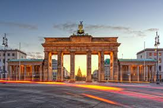
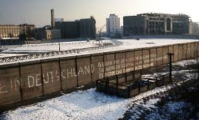
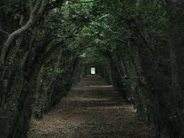
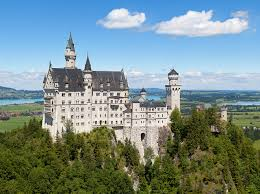

بوابة براندنبورغ من أشهر المعالم التاريخية في برلين وترمز لوحدة
ألمانيا.
Das Brandenburger Tor ist eines der berühmtesten Wahrzeichen Berlins.

كان جدار برلين يفصل بين شرق وغرب المدينة وأصبح اليوم موقعاً تاريخياً
مهماً.
Die Berliner Mauer war ein Symbol der Teilung Deutschlands.

منطقة طبيعية جميلة في جنوب ألمانيا تشتهر بالغابات الكثيفة والمناظر
الطبيعية.
Der Schwarzwald ist eine berühmte Region mit dichten Wäldern und
schöner Natur.

قلعة رائعة في جبال بافاريا وتعد من أجمل القلاع في أوروبا.